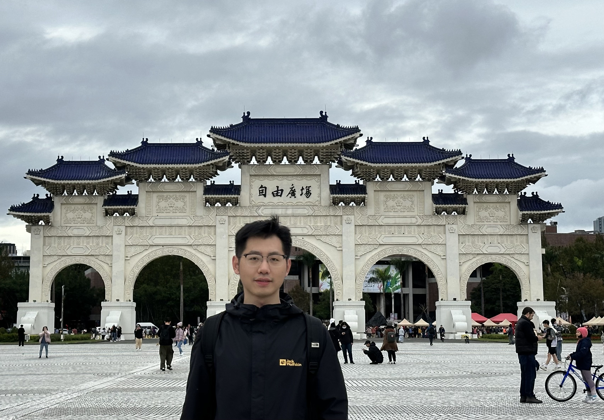
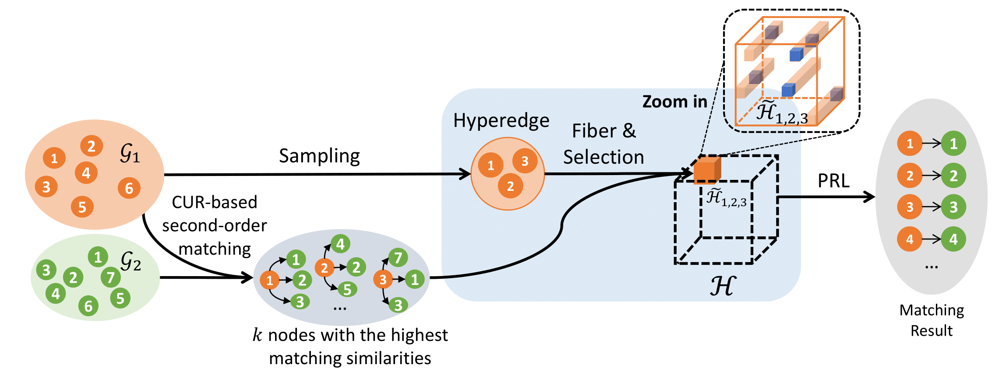
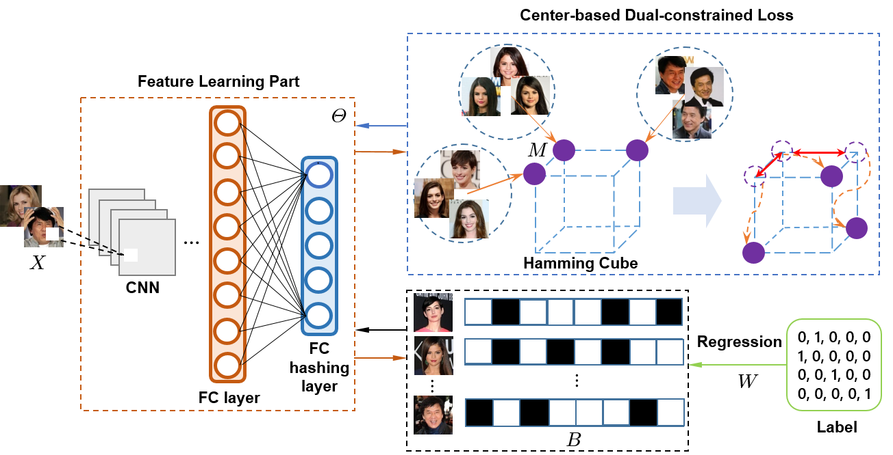
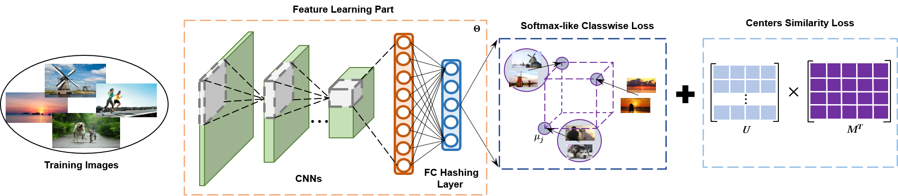
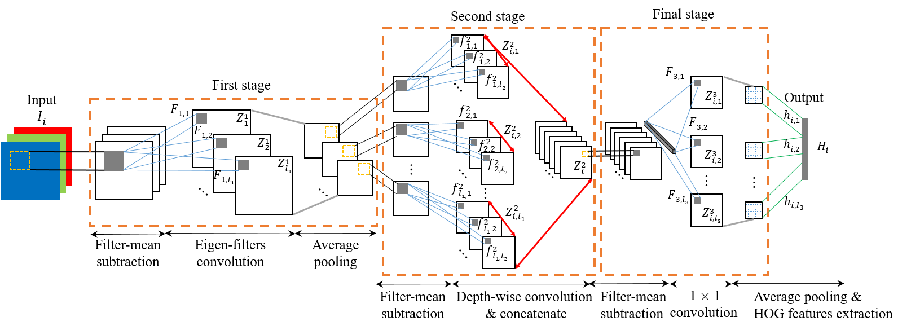

Ming Zhang章銘Ph.D.
Hong Kong Applied Science and Technology Research Institute (ASTRI), |
 |


I am currently a senior machine learning engineer at Hong Kong Applied Science and Technology Research Institute (ASTRI) located in the Hong Kong Science Park. Before that, I was a postdoctoral researcher at CIMDA. I earned my Ph.D. degree in the Department of Electrical Engineering (EE), City University of Hong Kong (CityU), supervised by Prof. Hong Yan. I obtained my MSc. degree in Electronic Information Engineering (with Distinction), also from the EE department, CityU. I received a B.Eng. degree in Automation from Nanjing Normal University (NNU) in 2017.
My research interests include machine learning and computer vision.
News
[Feb 2024] Our work of CURSOR has been accepted to CVPR 2024. See you at Seattle!
[May 2023] Orthonormal Product Quantization Network (OPQN) accepted by Pattern Recognition
[Nov 2022] Start my journey as a senior engineer at ASTRI
[Nov 2021] Join CIMDA as a postdoctoral researcher
[Aug 2021] I successfully passed my Ph.D. oral defense
[Apr 2021] One paper accepted by Pattern Recognition
[Oct 2020] One paper accepted by ICPR 2021
[Aug 2020] Awarded Research Tuition Scholarship (RTS) of CityU
[Dec 2019] One paper accepted by Pattern Recognition
Selected Publications [Google Scholar]
|  | CURSOR: Scalable Mixed-Order Hypergraph Matching with CUR Decomposition Qixuan Zheng, Ming Zhang, Hong Yan. IEEE/CVF Conference on Computer Vision and Pattern Recognition (CVPR), 2024 |

|
Orthonormal Product Quantization Network for Scalable Face Image Retrieval Ming Zhang, Xuefei Zhe, Hong Yan. |
|  | Deep Center-Based Dual-Constrained Hashing for Discriminative Face Image Retrieval Ming Zhang, Xuefei Zhe, Shifeng Chen, Hong Yan. |
|  | Improved Deep Classwise Hashing With Centers Similarity Learning for Image Retrieval Ming Zhang, Hong Yan. International Conference on Pattern Recognition (ICPR), 2021 |
|  | Deep Eigen-Filters for Face Recognition: Feature Representation via Unsupervised Multi-Structure Filter Learning Ming Zhang, Sheheryar Khan, Hong Yan. Pattern Recognition, 2020. |
Honors & Awards
Research Tuition Scholarship (RTS), City University of Hong Kong, 2020
Honorable Mention, The Interdisciplinary Contest In Modeling (ICM), 2016
The First Prize in Jiangsu Province, China Undergraduate Mathematical Contest in Modeling (CUMCM), 2015
Professional Activities
-
Paper Reviewer
International Journal of Computer Vision
Pattern Recognition
IEEE Transactions on Circuits and Systems for Video Technology
Neurocomputing
Expert Systems with Applications